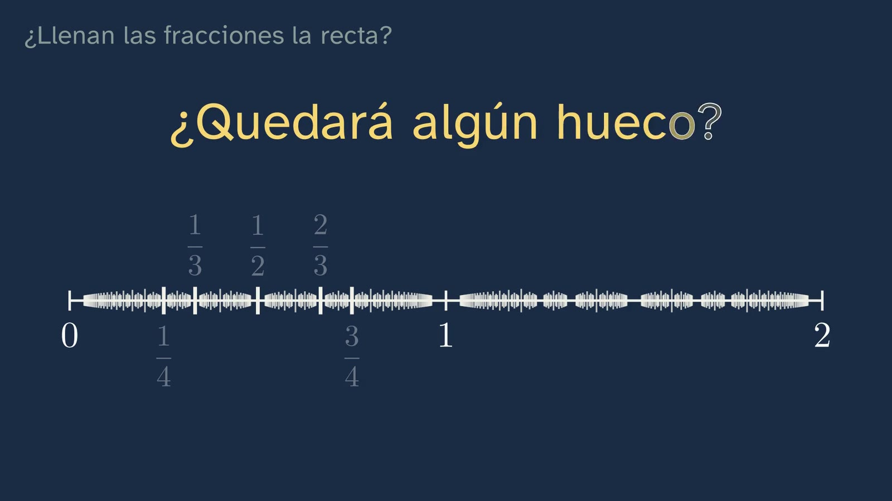

¿Llenan las fracciones la recta?
En pocas palabras
La clase parte de una pregunta que parece fácil: si marcamos en la recta todas las fracciones, ¿queda algún hueco? No la contesta (es la apuesta que abre la clase 2), pero prepara el terreno: las fracciones son densas, sus decimales siempre se acaban o se repiten y, al revés, todo decimal periódico es una fracción. El corazón de la clase es el reloj de los restos, que convierte una división a mano en una demostración que se ve.
Objetivo. Al terminar, el alumnado sabrá reconocer por sus decimales si un número es una fracción, pasar de una forma a otra y explicar por qué entre dos fracciones siempre cabe otra.
Currículo
Real Decreto 243/2022, Matemáticas I.
| Elemento | Qué trabaja la clase |
|---|---|
| Saberes básicos | A.1 Estrategias para operar con números reales. F.1 Tratamiento del error como generador de oportunidades de aprendizaje. |
| Competencias específicas | 2 (verificar la validez de las soluciones), 3 (formular e investigar conjeturas), 5 (conexiones entre ideas matemáticas) y 9 (aprender del error). |
| Criterios de evaluación | 2.1, 3.1, 5.1 y 9.1. |
Lo que hay que traer de la ESO: fracciones y decimales, la división con decimales, números pares e impares.
Cómo está construida la clase
Unos diez minutos, en siete capítulos. La clase sigue las bases formativas del canal: cada idea se predice antes de verse, se demuestra (no se afirma) y se practica.
| Capítulo | Qué pasa | Por qué así |
|---|---|---|
| La pregunta | Vera plantea el enigma y el alumnado apuesta sí o no, con una pausa. | Predecir antes de ver compromete con una respuesta y hace que la explicación importe. |
| Lo que ya sabes | 3/4 = 0,75 y 1/3 = 0,333…, con pausa para contestar antes de verlo. | Recuperar lo sabido fija más que volver a oírlo. |
| Siempre cabe otra | Zoom sobre la recta; el punto medio de 1/3 y 1/2 es 5/12; y por qué funciona siempre. | Primero la intuición (el zoom), después lo exacto (el argumento general). |
| El reloj de los restos | División de 1 entre 7 paso a paso; los restos dan la vuelta a un reloj de seis horas. | La demostración se ve: sólo hay seis restos posibles, así que el ciclo es inevitable. |
| Al revés | 0,2727… = 27/99 = 3/11, comprobado dividiendo; la regla general y el caso 1/6. | El «truco» se justifica y se generaliza, no se memoriza. |
| ¿Cuánto vale 0,999…? | El reto, y tres caminos distintos que llevan a 1. | El error típico se plantea con respeto y se desmonta razonando. |
| Para practicar | Tres ejercicios, una pregunta abierta y la diagonal del cuadrado como enlace a la clase 2. | Práctica espaciada: las soluciones llegan al empezar la clase siguiente. |

Errores típicos y cómo se tratan
- «0,999… es un poquito menos que 1». Es el más resistente. La clase lo desmonta de tres maneras: con el truco de restar colas, con 1/3 · 3, y preguntando cuánto le falta para llegar a 1 (menos que cualquier cantidad: cero). Conviene reconocer que la intuición es natural antes de corregirla.
- «Si tiene infinitas cifras, no es una fracción». 1/3 las tiene. La clase separa infinitas cifras de cifras que se repiten.
- «0,999… y 1 son números distintos porque se escriben distinto». Es el germen de la pregunta abierta: un mismo número puede tener dos escrituras decimales.
- Multiplicar siempre por 10 para pasar a fracción. Se multiplica por 10, 100 o 1000 según las cifras del periodo; si el periodo empieza más tarde (1/6 = 0,1666…), se combinan dos multiplicaciones.

Preguntas y soluciones
Para y piensa (dentro del vídeo)
- ¿Cuánto es 3/4? ¿Y 1/3? 0,75 (se acaba) y 0,333… (se repite).
- Sobra 1, igual que al principio: ¿qué pasará ahora? Todo se repite: 1/7 = 0,142857 142857…
- Divide 3 entre 11. Restos 3, 8, 3: vuelve el 3, así que 3/11 = 0,2727…
- ¿Cuánto vale 0,999…? Exactamente 1.
Para practicar (las soluciones abren la clase 2)
- 0,4545… como fracción. Periodo de dos cifras: 100x − x = 45, así que 99x = 45 y x = 45/99 = 5/11.
- ¿1/8 y 1/12 se acaban o se repiten? ¿Por qué? 1/8 = 0,125 se acaba: al dividir, un resto llega a cero (restos 1, 2, 4, 0). 1/12 = 0,08333… se repite. La razón de fondo: una fracción simplificada tiene decimales que se acaban si y sólo si su denominador no tiene más factores primos que 2 y 5 (8 = 2³; 12 = 2² · 3).
- Tres fracciones entre 1/3 y 1/2. Por ejemplo, 5/12 (el punto medio), 3/8 y 11/24 (los puntos medios de los dos trozos); o 2/5, 3/7 y 4/9.

Para seguir pensando. Si 0,999… y 1 son el mismo número, un número no puede ser lo que escribimos. Entonces, ¿qué es un número? No tiene respuesta de libro. Da para distinguir el número de sus representaciones (numeral, fracción, decimal, punto de la recta) y para asomarse a una pregunta filosófica clásica: ¿los números se descubren o se inventan? En el vídeo queda abierta a propósito.

Una actividad para el aula
El reloj de los restos, en papel (20–25 minutos, en parejas).
- Cada pareja recibe un denominador: 3, 7, 11, 13 o 17. Divide 1 entre él a mano, apuntando los restos, hasta que uno se repita, y dibuja su reloj (tantas horas como el denominador menos uno).
- Se ponen en común las longitudes del periodo: 1/3 → 1; 1/7 → 6; 1/11 → 2; 1/13 → 6; 1/17 → 16.
- Conjetura (CE3): ¿qué relación hay entre el denominador y la longitud del periodo? Con estos datos aparece que el periodo nunca pasa del denominador menos uno y que siempre lo divide (12 = 6 · 2; 10 = 2 · 5).
- Comprobación (CE2): ¿qué pasa con 2/7? (Recorre el mismo reloj que 1/7, empezando en el 2.) ¿Y con 1/8 o 1/40? (El reloj se para: algún resto llega a cero.)
Para el profesorado: que el periodo de 1/p divida a p − 1 cuando p es primo (distinto de 2 y de 5) es una consecuencia del pequeño teorema de Fermat. No hace falta demostrarlo en 1.º: basta con que la clase lo conjeture con datos y compruebe que se cumple.

Fuentes
- Real Decreto 243/2022, de 5 de abril, por el que se establecen la ordenación y las enseñanzas mínimas del Bachillerato (BOE): https://www.boe.es/buscar/act.php?id=BOE-A-2022-5521.
- Todo lo demás se demuestra en la propia clase. Los cálculos de esta ficha están comprobados ejecutándolos.
Sobre esta clase
GinCol Lab es un canal gratuito de ciencia para curiosos. Vera es un personaje ilustrado con voz sintética, creada por ordenador, que no imita a ninguna persona conocida; el guion lo escribe una IA (Claude, de Anthropic) y lo revisa una persona antes de publicarse. Si ves un error, dínoslo: aprender también es corregir.
Esta ficha se publica con licencia Creative Commons Reconocimiento 4.0: puedes copiarla, adaptarla y usarla en tu aula citando a GinCol Lab.
Ficha docente de GinCol Lab · Licencia CC BY 4.0 · Código fuente y erratas